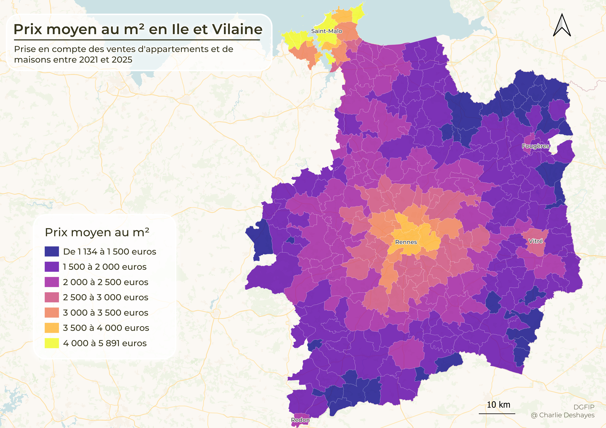
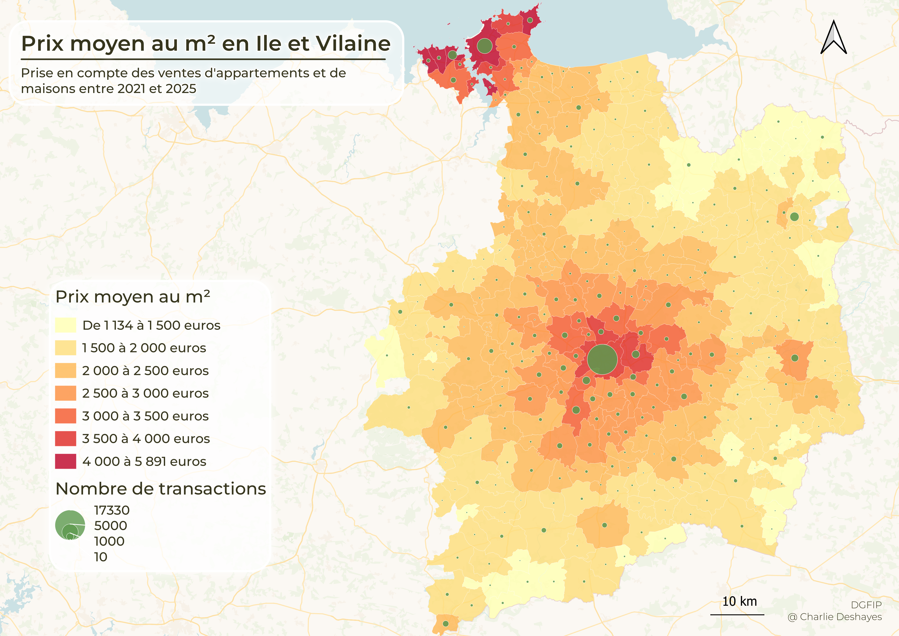
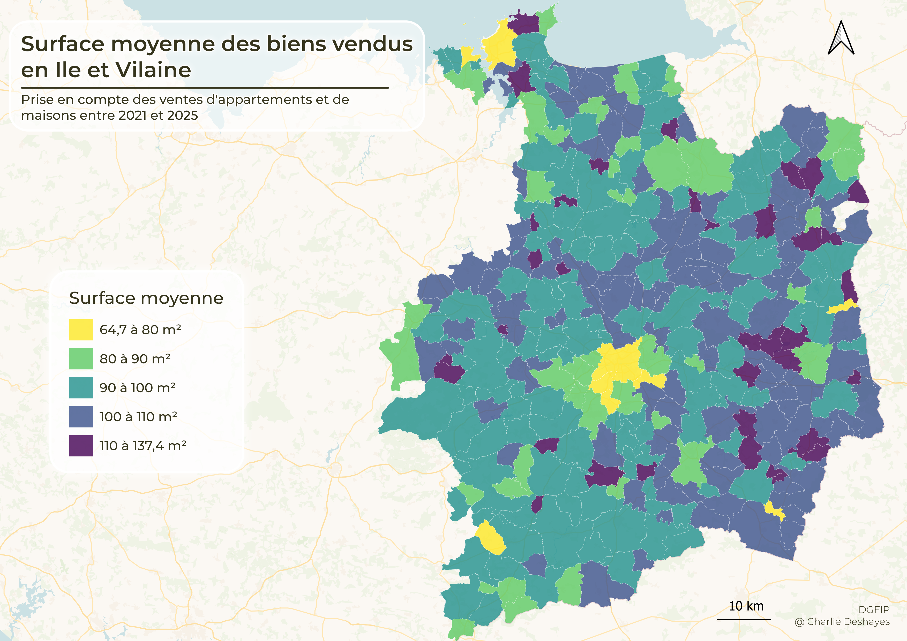
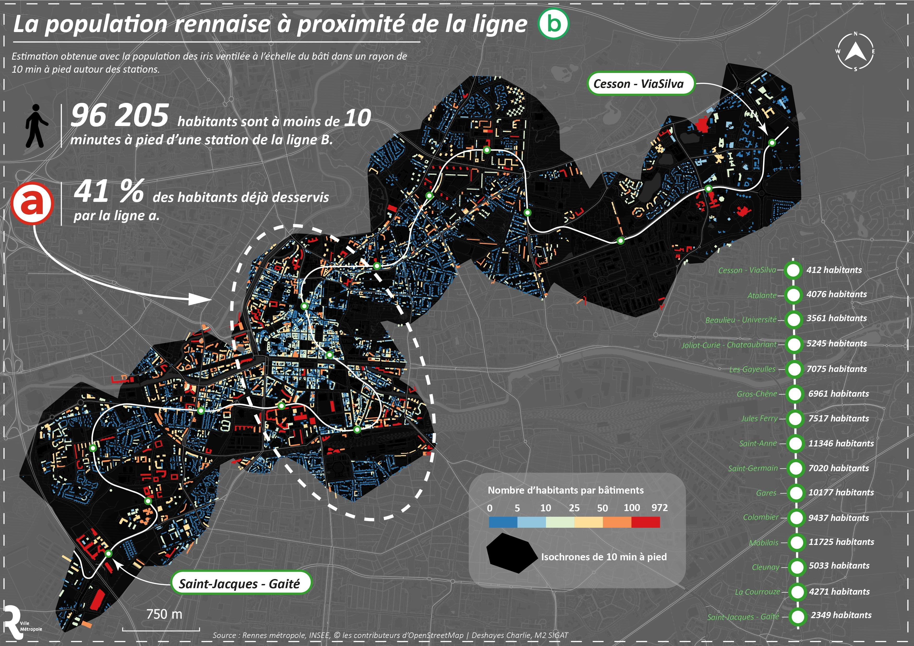
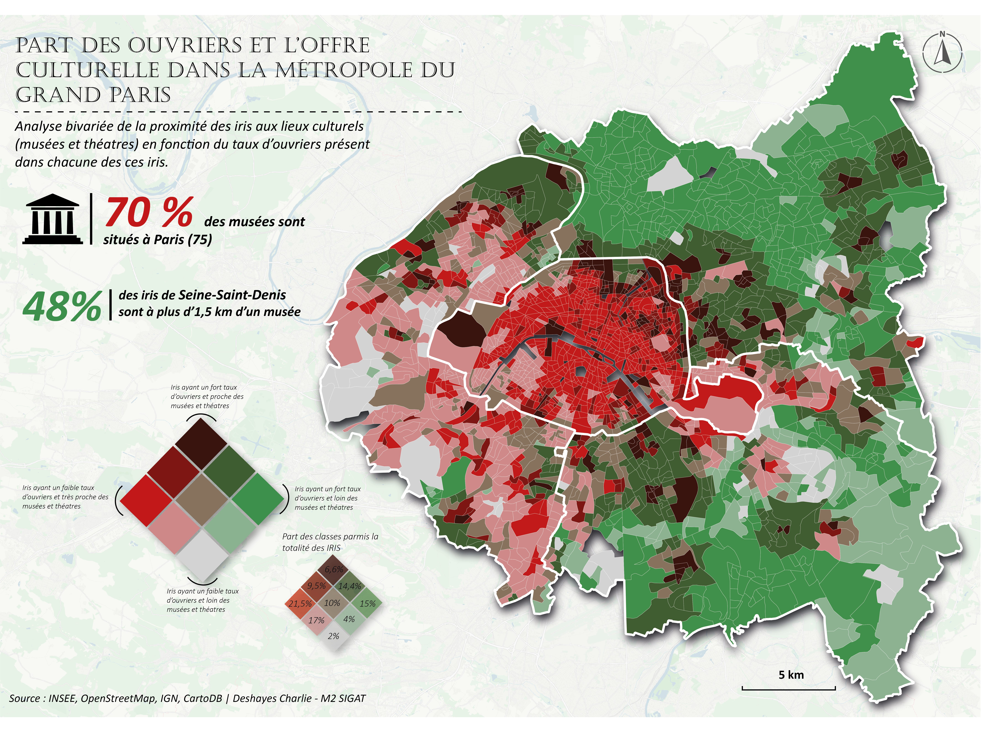

Analyse des Demandes de Valeurs Foncières (DVF)

La donnée DVF est fournie par le Direction Générale des Finances Publiques (DGFIP), elle centralise plusieurs informations à propose des transactions immobillières. Ces données sont très riches et permettent de comprendre en profondeur le marché de l'immobilier sur un territoire. Afin de les rendre exploitables, des traitements préalables de filtrage, nettoyage et d'aggrégations ont été réalisés dans un script Python.
Cette première carte dresse un portrait synthétique de l'immobilier en Ile et Vilaine à l'échelle communale. On y retourve le prix moyen au mètres carré par commune pour les transactions entre 2021 et 2025. Les cartes suivantes visent à compléter la première avec l'ajout du nombre de ventes effectuées sur la période ou encore la surface moyenne des biens vendus.


Ventilation de la population au bati

Cette carte met en avant une méthodologie de ventilation du nombre d'habitants par iris dans les bâtiments. La méthode ce base sur la surface plancher des habitants afin d'affecter proportionnellement les habitants aux bâtiments.
Le second objectif de cette carte est de mettre en évidence les population vivant à proximité de la ligne B du métro de Rennes. De ce fait, une sélection des bâtiments dans un rayon de 10 minutes à pied autour de la ligne B à été effectué afin de mesurer la qualité de la désserte de cette nouvelle ligne de métro.
Carte bivariée - Part d'ouvriers & Lieux culturels

La carte bivariée permet de représenter simultanément deux variables au sein d'une même matrice de couleurs. Cette approche est intéressante pour mesurer le degrés de corrélation des deux variables dans l'espace.
Dans la carte ci-dessus, l'objectif est de donner à voir la relation entre la part des ouvriers et la distance aux espaces culturels au sein du Grand Paris. L'échelle des iris à été privilégiée afin de mettre en valeur les éventuelles disparitées géographiques.